インジェスト¶
インジェスト中、デジタルオブジェクトは、SIPにパッケージ化され、正規化、AIPへのパッケージ化、DIPの生成など、いくつかのマイクロサービスを介して実行されます。
デフォルトの決定ポイントのいくつかをスキップしたり、希望するワークフローに対して事前に設定された選択を行いたい場合は、 ユーザー管理 - 処理設定 を参照してください。
インジェスト中にエラーが発生した場合は、 エラー処理 を参照してください。
このページでは：
SIPの作成¶
転送 の説明に従って転送を処理します。[転送] タブで"単一の SIP を作成して処理を続ける" を選択した場合、SIP が作成され、Archivematica は インジェスト タスクの実行を開始します。[インジェスト] タブをクリックして、SIP の処理を続けます。
単一の SIP は、多数のマイクロサービスを介して移動します。そのように Archivematica を事前設定している場合、処理は決定ポイントで停止し、ファイル識別を再度実行するか、転送中に取得された既存のファイル識別情報を使用することができます。Archivematica のデフォルトでは、既存のデータが使用されます。このオプションの詳細については、 構成の処理 を参照してください。
SIP が"正規化" に達すると、Archivematica が SIP をどのように正規化するか、いくつかのオプションが表示されます。ワークフローに最も適したオプションを選択してください。
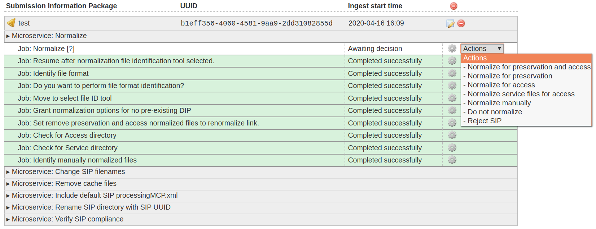
正規化マイクロサービス¶
説明メタデータを追加するには、 メタデータを追加 を参照してください。
PREMIS権利情報を追加するには、下記の PREMIS権利の追加 を参照してください。
正規化オプションの選択については、下記の 正規化 を参照してください。
{kind=link}
[インジェスト]タブで実行されるマイクロサービスには、次のものが含まれます：
Verify SIP compliance ：SIP が Archivematica の処理に必要なフォルダ構造に適合していることを確認します。
SIP UUIDでSIPディレクトリ名を変更 ：SIPディレクトリ名にSIP UUIDを付加することで、SIPとそのメタデータを関連付け、SIPがMaildir転送タイプであるかどうかをチェックし、ワークフローを決定します。転送（transfer）UUIDとSIP UUIDの両方が最終的なAIPに取り込まれます。
Normalize ： 正規化 は、保存計画 のルールを使用して、インジェストされたデジタルオブジェクトを、ユーザーの好みに応じて、望ましい保存形式および/またはアクセス形式に変換します。正規化に関する選択は、サービス実行時に行うことも、 処理設定 で自動化もできます。
手動で正規化されたファイルを処理 ：転送前に正規化されたファイルを処理するか、 インジェスト中に手動で正規化 を許可します。
派生物のポリシーチェック ：正規化中に作成された派生物へのアクセスと保存を、 フォーマットポリシーレジストリ と照らし合わせてチェックします。
Add final metadata ：必要に応じて、ユーザーがUIを通じて メタデータ を追加できるようにします。
SIPの内容を書き写す ： Tesseract OCRツールをSIPのJPGまたはTIFF画像上で実行します。
提出書類の処理 ：SIPに含まれる提出書類を処理し、
objectsディレクトリに追加します。Bind PIDs ：この マイクロサービス は、永続的な識別子を作成するためにHandle.Netレジストリとの統合を使用します。
AIP METS の生成 ：Archivematica AIP METS.xml ファイル を生成します。
Prepare DIP ：アクセス用に正規化する場合、オブジェクトのアクセスコピー、サムネイル、METS.xmlファイルのコピーを含むDIPを作成します。
Prepare AIP ： AIPをBagitフォーマットで作成 ; AIPポインターファイルを作成 ; AIPにインデックスを付け、可逆圧縮します。
Review AIP ：Prepare AIP microserviceの一部で、AIPを進める前にAIPの構造と内容を確認できます。
DIP のアップロード ：DIP が作成されると、ユーザーは、 必要に応じて、接続されたアクセスオプションに DIP をアップロードできます 。[リンク］
Store DIP ：Storage Serviceにあらかじめ設定された場所にDIPを保存することを選択できます。
Store AIP ： AIP を
sharedDirectoryStructure/www/AIPsStoreまたは他の指定されたディレクトリに移動します。AIPが格納される前に、そのコピーがローカルのtempディレクトリに展開され、そこでBagItの標準的なチェックが行われます：verifyvalid、checkpayloadoxum、verifycomplete、verifypayloadmanifests、verifytagmanifests。
説明メタデータを追加¶
Archivematicaは、デジタルオブジェクトに関する説明メタデータを受け入れることができます。転送を開始する前に説明メタデータを含める方法については、 説明メタデータや権利メタデータを含む転送 を参照してください。このセクションでは、Archivematica で処理を開始した後に、素材に説明メタデータを追加する方法について説明します。
Archivematicaは、 処理設定 フィールド Reminder: add metadata if desired を None に設定することで、メタデータを追加するリマインダを表示するように設定できます。このリマインダは、メタデータを追加できる最後の瞬間に表示されます。インジェストがこのポイントを過ぎると、SIPにメタデータを追加することはできなくなります。
素材の処理中にメタデータを追加するには、 フォーム に入力するか、 CSV ファイルをアップロード の2つの方法があります。
説明メタデータを AtoM に渡す予定の場合、利用可能なDublin Core要素については、 AtoM Dublin Core を参照してください。
ユーザーインターフェイスフォームを使用したメタデータの追加¶
この方法は、転送レベルのメタデータを処理時に作成するユーザーや、メタデータを Archivematica にアップロードするためにCSVを準備する余分な作業をしたくないユーザーに最適です。メタデータフォームは、 Dublin Core Metadata Element Set を実装しています。
この方法では、転送全体に説明メタデータを追加することしかできないことに注意してください。項目ごとにメタデータを追加するには、 CSV ファイルを使用してメタデータをインポート し、転送前に 転送に CSV を含める か、 ユーザー インターフェースから CSV をアップロード します。
重要
** マイクロサービス Reminder: add metadata if desired が完了する前に、以下のステップ** を実行する必要があります。この時点以降では、入力されたメタデータは、SIPに正しく添付されないか、METSに入力されません。
転送またはインジェストタブで、転送名の右側にあるメタデータテンプレートのアイコンをクリックします。
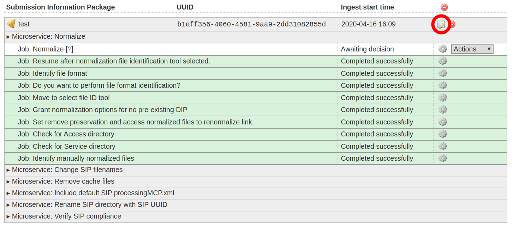
メタデータを追加するには、テンプレートのアイコンをクリックします¶
これでSIP詳細ページに移動します。 メタデータ の見出しの下で、 追加 をクリックします。
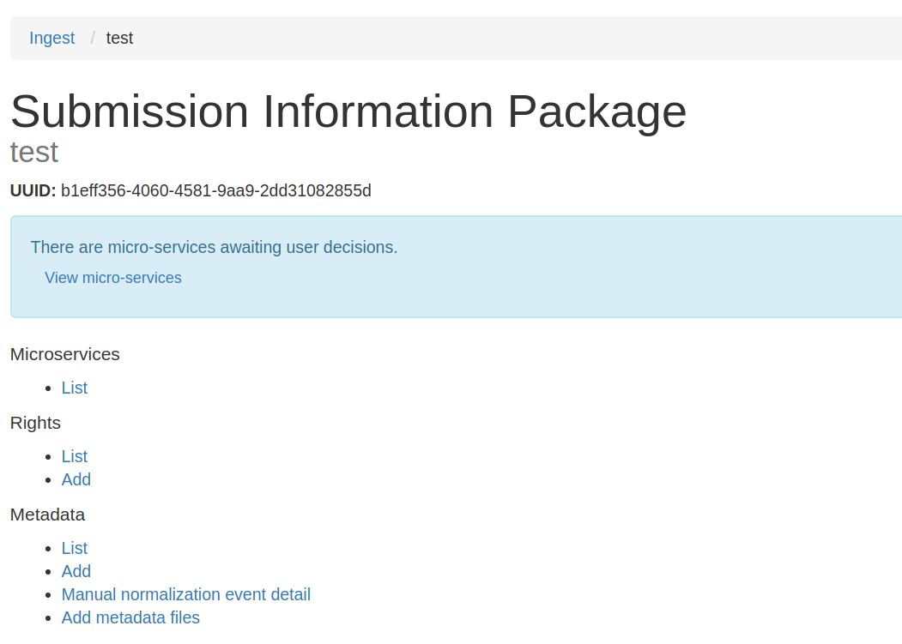
SIP情報ページ¶
必要に応じてメタデータを追加し、画面下部の 作成 をクリックして保存します。フィールドをクリックしてカーソルを合わせると、要素を定義するツールチップが表示され、 Dublin Core Metadata Element Set へのリンクが表示されます。
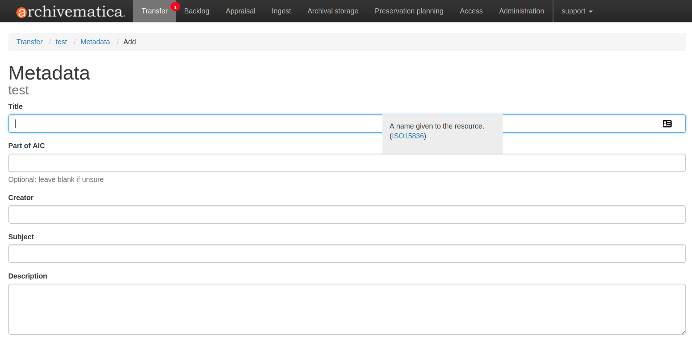
メタデータ入力フォーム
作成 をクリックすると、リストページにメタデータエントリーが表示されます。さらに編集するには、右側の 編集 をクリックします。削除するには、 削除 をクリックします。さらに説明メタデータを追加するには、リストの下にある 追加 ボタンをクリックします。
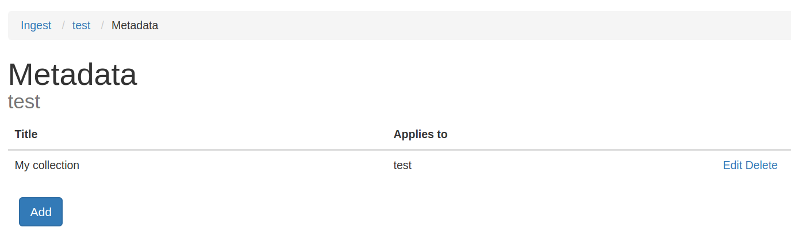
SIPメタデータリスト¶
[転送] または [インジェスト] タブに戻り、SIPの処理を続けます。
{kind=link}
{kind=link}
{kind=link}
{kind=link}
ユーザーインターフェースによるメタデータCSVファイルのアップロード¶
説明メタデータのCSVファイルは、階層的メタデータを作成する場合、個々のオブジェクトにメタデータを適用する場合、または Dublin Core Metadata Element Set で利用可能なフィールド以外のメタデータフィールドを使用する場合に最適です。
CSVファイルをアップロードするには、デジタルオブジェクトと同じように、Archivematicaに接続された転送元ロケーションで利用可能である必要があります。転送元ロケーションの詳細については、 転送元ロケーション を参照してください。
メタデータ CSV ファイルの構成方法など、Archivematicaへのメタデータのインポートに関する詳細については、 メタデータのインポート を参照してください。
重要
マイクロサービス Reminder: add metadata if desired を実行する 前 に、次の手順を実行する必要があります。この時点を過ぎると、入力されたメタデータは SIP に適切に添付されなくなり、METS に入力されなくなります。
[インジェスト] タブで、転送名の右側にあるメタデータテンプレートのアイコンをクリックします。
メタデータを追加するには、テンプレートのアイコンをクリックします¶
これにより、SIP の詳細ページが表示されます。 メタデータ 見出しの下で、 メタデータ ファイルを追加 をクリックします。
SIP情報ページ¶
転送元の場所を選択し、 ブラウズ をクリックします。フォルダを移動してCSVファイルを見つけます。CSV ファイルを見つけたら、ファイル名の右側にある 追加 をクリックして、必要に応じて繰り返します。
すべてのファイルを追加したら、 ファイルを追加 をクリックします。回転するホイールが、ファイルがアップロード中であることを示します。それが消えたら、[インジェスト] タブに戻り、SIPの処理を続けます。
PREMISの権利を追加¶
Archivematica は、デジタルオブジェクトに関するPREMIS 権利メタデータを受け入れ、この情報を解析して METS ファイルに書き込むことができます。転送を開始する前にメタデータを含める方法については、 説明メタデータや権利メタデータを含む転送 を参照してください。このセクションでは、Archivematica で処理を開始した後に、素材に権利メタデータを追加する方法について説明します。
Archivematicaは、 処理設定 フィールド Reminder: add metadata if desired を None に設定することで、メタデータを追加するリマインダを表示するように設定できます。このリマインダは、メタデータを追加できる最後の瞬間に表示されます。インジェストがこのポイントを過ぎると、SIPにメタデータを追加することはできなくなります。
注釈
権利フォームは 2 ページで構成されており、1 つは権利の根拠に関するページ、もう 1 つは行為に関するページです。Archivematica の PREMIS 権利の実装の詳細については、 PREMIS テンプレート を参照してください。
転送またはインジェストタブで、転送名の右側にあるメタデータテンプレートのアイコンをクリックします。
権利を追加するには、テンプレートのアイコンをクリックします。¶
これでSIP詳細パネルが表示されます。左側で、 権利 の下にある、 追加 をクリックします。
SIP詳細パネル¶
権利根拠情報を追加し、画面下部の 保存 ボタンをクリックしてデータを保存するか、データ入力が終了して2ページ目に進む準備ができた場合は 次へ をクリックします。
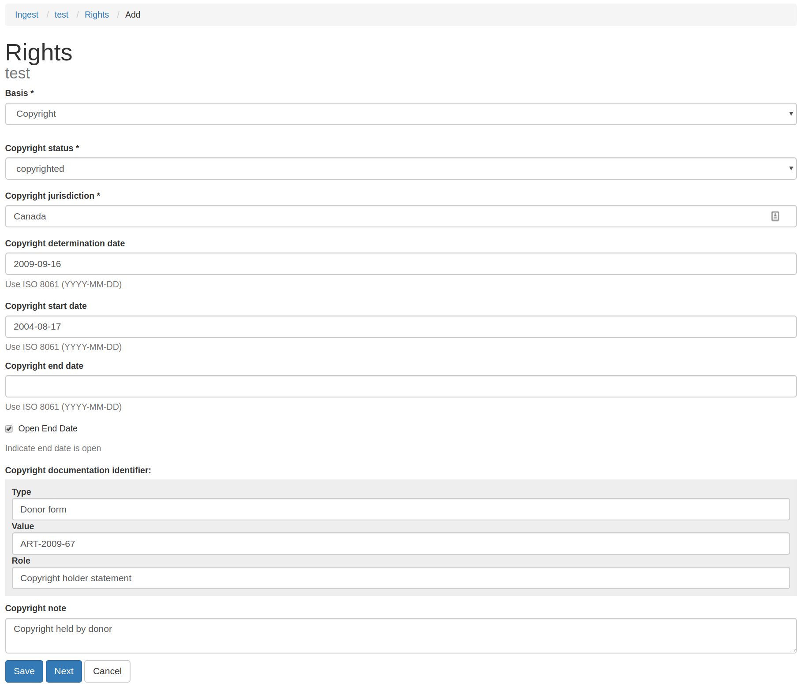
SIP権利テンプレート - 最初のページ¶
行為の情報と関連する許可/制限を入力し、 保存 をクリックしてデータを保存します。
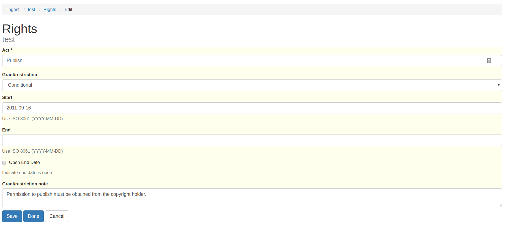
SIP権利テンプレート - 2ページ目¶
行為のページで 保存 をクリックすると、別の行為を追加し、さらに許可／制限を追加するオプションが表示されます。
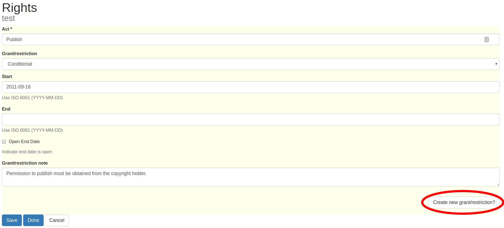
権利テンプレートで繰り返し可能な行為¶
アクトの追加が完了したら、 Done をクリックします。リストページに権利エントリが表示されます。 「追加」 を再度クリックして権利を追加したり、このページから既存の権利を編集または削除したりできます。
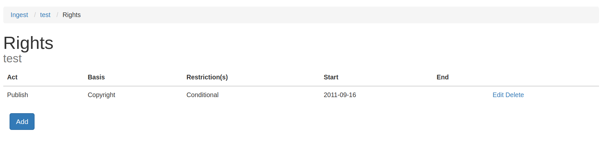
権限のある SIP 詳細パネル¶
{kind=link}
{kind=link}
{kind=link}
{kind=link}
[転送] または [インジェスト] タブに戻り、SIPの処理を続けます。
正規化¶
正規化とは、インジェストされたデジタルオブジェクトを、好ましい保存形式および/またはアクセス形式に変換するプロセスです。
オリジナルのオブジェクトは、常に正規化されたバージョンと共に保存されます。Archivematicaの保存戦略の詳細については、マニュアルの 保存計画 セクションを参照してください。
正規化マイクロサービスでは、SIPがダッシュボードに表示され、その横にベルのアイコンが表示されます。[アクション] ドロップダウンメニューから正規化オプションを1つ選択します：
正規化オプションの選択¶
保存とアクセスのために正規化 - オブジェクトの保存コピーと、DIPの生成に使用されるアクセスコピーを作成します。
保存のために正規化 - 保存用コピーのみを作成します。アクセスコピーは作成されず、DIPも生成されません。
アクセス用に正規化 - AIPは、オリジナルのみを含みます。保存コピーは作成されません。DIPの生成に使用されるアクセスコピーが作成されます。
アクセス用のサービスファイルを正規化 - 詳細は、 サービス（メザニン）ファイルで素材を転送 を参照してください。
手動で正規化 - 詳細は、 手動正規化 を参照してください。
正規化しない - AIPには、原本のみが含まれます。保存用コピーやアクセス用コピーは生成されず、DIPも生成されません。
Reject SIP - インジェストはキャンセルされます。
転送の設定によっては、上記のオプションがすべて表示されない場合があります。
正規化が完了したら、正規化レポートで結果を確認できます。[アクション]ドロップダウンメニューの横にあるレポートアイコンをクリックします。
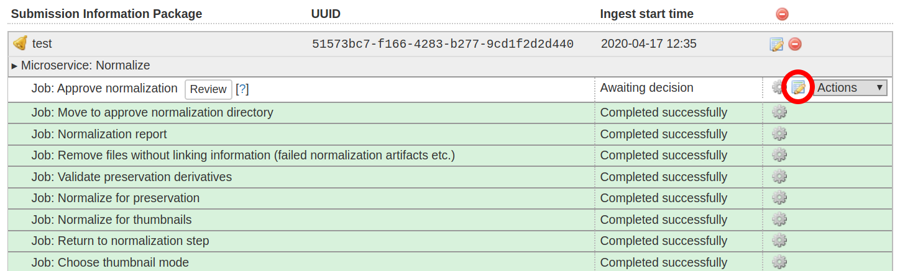
正規化レポートを開くには、レポートアイコンをクリックします¶
このレポートには、正規化が試みられたかどうか、どのような目的で行われたかについての詳細情報が記載されています。ピンク色の網掛けは、ファイルが保存またはアクセスに適したフォーマットに正規化されていないことを示します。
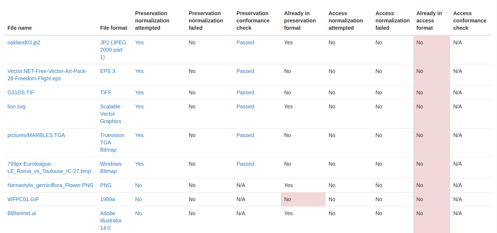
[見直し] をクリックすると、新しいタブで正規化結果を確認できます。
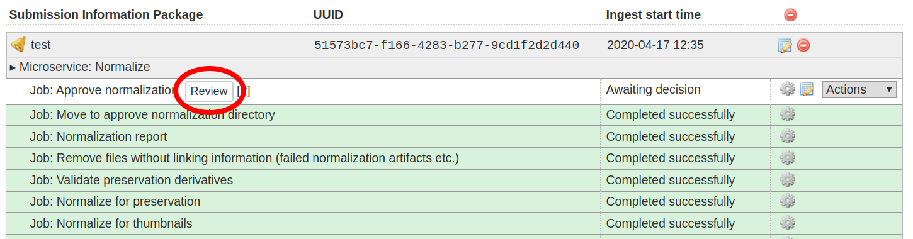
新しいタブで正規化結果を確認¶
ブラウザにファイルを表示するためのプラグインがある場合は、クリックすると別のタブで開くことができます。ファイルをクリックしてもブラウザで開けない場合は、ファイルがローカルにダウンロードされるため、お使いのマシン上の適切なソフトウェアを使用して表示できます。
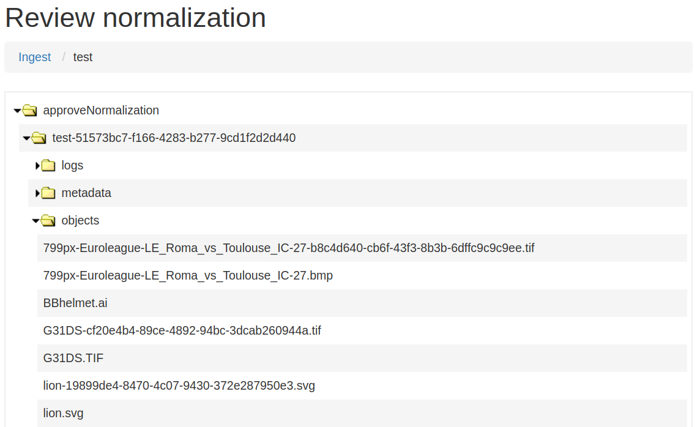
新しいタブで正規化結果を確認¶
SIP の処理を続けるには、[アクション] ドロップダウンメニューで正規化を承認します。SIP を拒否したり、正規化をやり直したりすることもできます。正規化でエラーが発生した場合は、「エラー処理」の手順に従って問題の詳細を確認してください。
{kind=link}
{kind=link}
{kind=link}
{kind=link}
参考
Bind PID¶
PID のバインドとは、情報リソースに永続的な識別子またはハンドルを割り当てるレジストリである Handle.Net と Archivematica の統合を利用することを指します。Handle.Net を使用しない場合は、このマイクロサービスのデフォルトの ダッシュボード処理 構成設定を "いいえ" に設定することを検討してください。
Handle.Netを使用する場合、設定されたHandle.NetレジストリにPIDを定義することで、デジタルオブジェクト、ディレクトリ、またはAIPの永続識別子（PID）を作成するようにArchivematicaを設定できます。Handle.Netは、PIDから永続URL（PURL）を作成し、永続URLへのリクエストをHandle.Netで設定されたターゲットURLにリルートできます。
ArchivematicaとHandle.Netを設定するには、まず [管理] タブの サーバー設定の処理 の設定を入力します。
処理中、Bind PID決定ポイントで はい を選択すると、Handle.Net HTTP REST APIサーバーにPIDをミントする要求が送信されます。デフォルトでは、PIDはオブジェクトのUUIDに基づいています。転送画面でアクセッション番号を入力した場合は、アクセッション番号を使用することもできます。
重要
AIP 全体の PID を生成する場合、他の AIP が同じアクセッション番号を使用しないことが保証できる場合にのみ、PID のベースとしてアクセッション番号を使用してください。同じアクセッション番号を持つ複数の AIP を作成する場合は、AIP PID ソースを UUID に設定します。
ファイルやディレクトリは、常にそのファイルやディレクトリの UUID を PID の基礎として使用することに注意してください。
SIPコンテンツのテキスト変換¶
Archivematica では、 Tesseract OCR ツールを使用して SIP コンテンツをテキスト変換するオプションがユーザーに提供されます。このマイクロサービス中にユーザーが [はい] を選択すると、OCR ファイルが DIP に含まれ、AIP に保存されます。
注釈
Tesseract は、単一の画像（例えば、画像ファイルとしてスキャンされた書籍の個々のページ）からテキスト変換します。複数ページのオブジェクトやワープロファイル、PDF ファイルなどのテキスト変換には対応していません。
AIPの保存¶
正規化が完了した後、SIPは、提出ドキュメンテーションとメタデータ処理、METSファイル生成、インデックス作成、DIP生成、AIPパッケージングを含む多くのマイクロサービスを介して実行されます。AIP がパッケージングされると、それを保存する準備ができます。
Archivematica は多くのAIP保存場所を設定できます。ユーザーは、Archivematica インターフェイスのドロップダウンメニューを使用して、各 AIP に適切な保存場所を選択できます。AIP 保存場所を設定するには、 Storage Service 文書 を参照してください。
{kind=link}
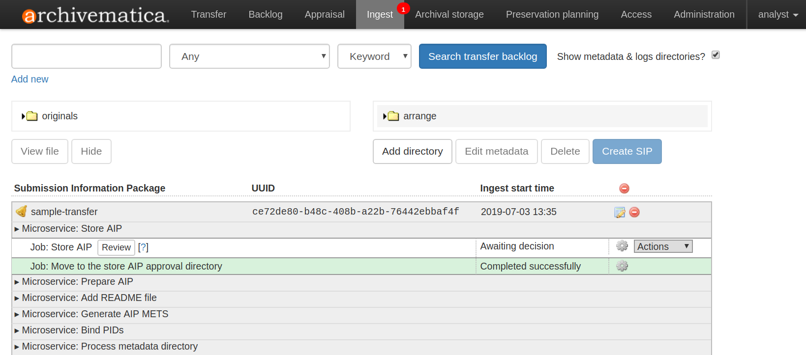
Archivematicaは、AIPを保存する準備ができています¶
AIPを保存する前に、 Review をクリックして、AIPの内容を確認できます。（ここで、AIPをを閲できる新タブ開きます。AIPの個々のオブジェクトを確認するには、7zファイルをクリックしてダウンロードします。METSファイル（
METS-uuid.xmlという名前のファイル）をクリックして表示もできます。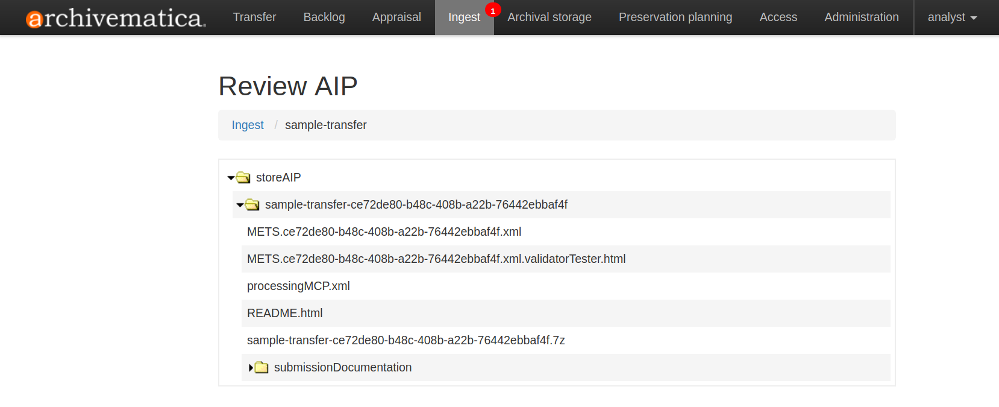
Archivematica の AIP 構造と METS ファイルの詳細については、 AIP 構造 を参照してください。
AIPを保存する準備ができたら、アクションドロップダウンメニューから AIPの保存 を選択します。必要であれば、AIPを拒否もできます。
プロンプトが表示されたら、AIP を保存する保存場所を選択します。
AIP が保存されると、 アーカイブストレージ タブで表示および管理できます。
{kind=link}
注釈
Storage Service において、1つのストレージ場所をAIPストレージのデフォルトの場所として指定することが可能です。デフォルトの保存場所は、AIP保存場所ドロップダウンメニューで Default location と表示されますが、保存場所は、他の保存場所オプションと一緒に名前でも表示されます。
AIPの保存場所が1つしかない場合は、自動的にデフォルトの場所に設定され、 Default location と保存場所自体がドロップダウンメニューに表示されます。
DIPのアップロード¶
Archivematica supports DIP uploads to AtoM, ArchivesSpace, and CONTENTdm. For information about uploading DIPs to your access system, see Access.
DIPは、AIPと同様に保存できますが、AIPの部分的な 再インジェスト 実行により、必要なときにDIPを生成もできます。
注釈
DIPをアップロードする前にAIPを保管することをお勧めします。保存中にAIPに問題が発生し、DIPがすでにアップロードされている場合は、アップロード場所からDIPを削除する必要があります。
注釈
Storage Service で、1つの保存場所をDIP保管のデフォルトの場所として指定することが可能です。デフォルトの場所は、「Store DIP location（DIP保存場所）」ドロップダウンメニューで「 Default location 」と表示されますが、保存場所は、他の保存場所オプションと一緒に名前でも表示されます。DIP保存場所が1つしかない場合、その場所は、自動的にデフォルトの場所として設定され、 Default location と保存場所自体の両方がドロップダウンメニューに表示されます。
AIPの再インジェスト¶
AIPの再インジェストには3種類あります：
1. メタデータのみ¶
このメソッドは、説明メタデータおよび/または権利メタデータを追加または更新するためのものです。そうすることで、AIPのMETSファイルのdmdSecが更新されます。 オリジナルのメタデータはまだ存在しますが、下にスクロールすると、STATUS="更新" のような別の dmdSec も表示されることに注意してください：
<mets:dmdSec ID="dmdSec_792149" CREATED="2017-10-17T20:32:36" STATUS="updated">
メタデータのみのAIP再インジェストを選択すると、インジェストタブに戻ります。
2. 部分再インジェスト¶
この方法は通常、AIPを作成した後にDIPを作成したい機関が使用します。その後、DIPをアクセスシステムに送信するか、保存できます。
部分的な再インジェストを選択すると、インジェストタブに戻ります。
3. 完全再インジェスト¶
この方法は、すべての主要なマイクロサービス（必要に応じて保存のための再正規化を含む）を実行できるようにしたい機関向けの方法です。完全な再インジェストのユースケースとして考えられるのは、新しいファイルの特性化や妥当性確認ツールが開発され、Archivematicaの将来のバージョンに統合された場合です。これらの更新されたツールでマイクロサービスを実行すると、更新されたより良いAIPになります。
完全な再インジェストを使用してメタデータを更新し、アクセスのために再正規化することもできます。
完全な再インジェストを行う場合、使用したい処理設定の名前を入力する必要があります。新しい処理設定を追加するには、 処理設定 を参照してください。
重要
次のワークフローは、完全な AIP 再インジェストではサポート されません ：
初回インジェスト時に実施しなかった場合は、内容検査します
最初のインジェストで実行されなかった場合、構造レポートを転送します
AIP内のパッケージを抽出し、削除します
再インジェスト中に再配列するために AIP をバックログに送信します
完全な再インジェストを選択すると、[転送] タブに戻ります。
AIP が再インジェストされたかどうかを METS ファイルで確認する方法¶
1. Look at the Header of the METS file, which will display a CREATEDATE and
a LASTMODDATE: <mets:metsHdr CREATEDATE="2017-10-17T20:29:21"
LASTMODDATE="2017-10-17T20:32:36"/>
2. You can also search for the re-ingest premis:event
<premis:eventType>reingestion</premis:eventType>
3. If you've updated the descriptive or rights metadata you will find an updated
dmdSec: <mets:dmdSec ID="dmdSec_792149" CREATED="2017-10-17T20:32:36"
STATUS="updated">
再インジェストプロセスはどこから始めるべきか¶
ダッシュボードのArchival Storageタブ、Storage Service、またはAPIから再インジェスト処理を開始できます。
ダッシュボードのアーカイブストレージタブ¶
[アーカイブストレージ] タブに移動し、検索または参照して再インジェストしたい AIP を見つけます。
1. Click on the name of the AIP or View to open that AIP's view page. Under Actions, click on Re-ingest.
{kind=link}
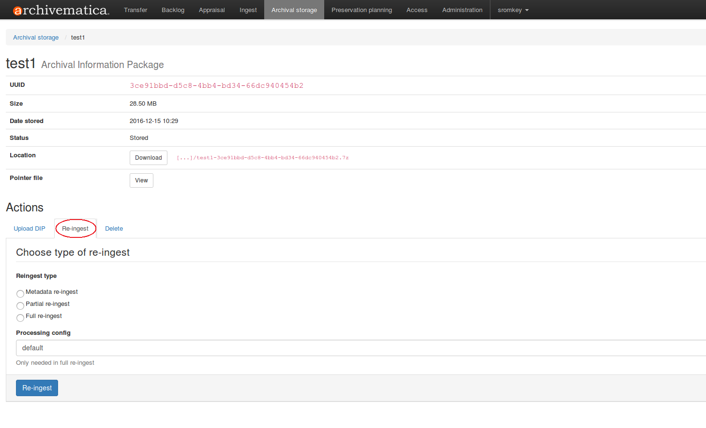
再インジェストのタイプ（メタデータ、部分的または完全）を選択します。
{kind=link}
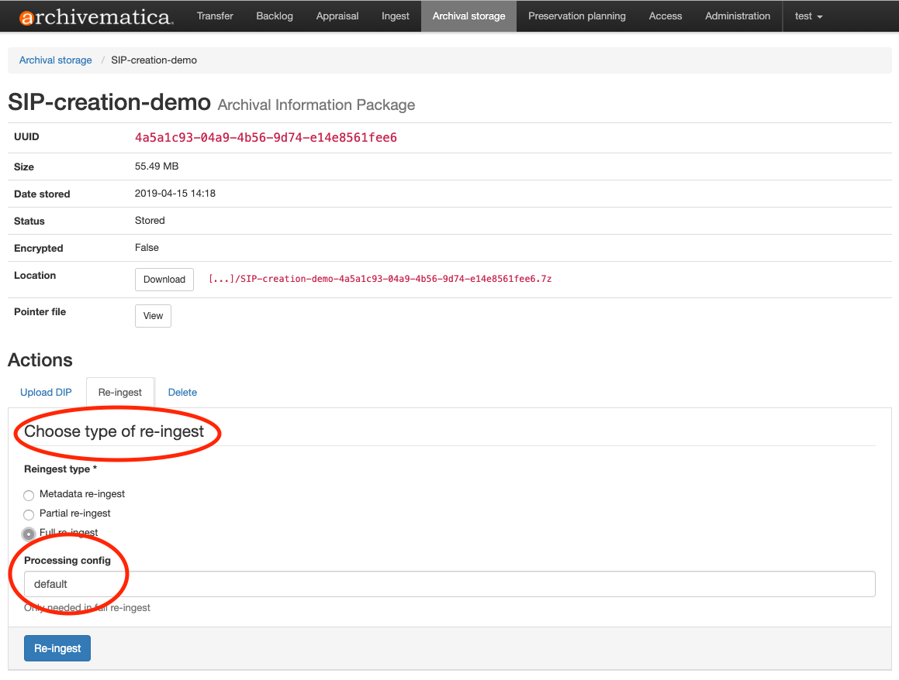
再インジェスト をクリックします。Archivematicaは、AIPが再試験のためにパイプラインに送信されたことを通知します。
注釈
パイプラインで既に再インジェストされているAIPを再インジェストしようとすると、Archivematicaはエラーで警告します。
注釈
Archivematica はパッケージを抽出して削除できるように見えます。しかし、でき上がった AIP にはまだパッケージが含まれており、METS ファイルでは再インジェストイベントが正しく関連付けられていません。これは:issue: 10699 として文書化されています。
転送またはインジェストタブに進み、AIPの再インジェストを承認します。
{kind=link}
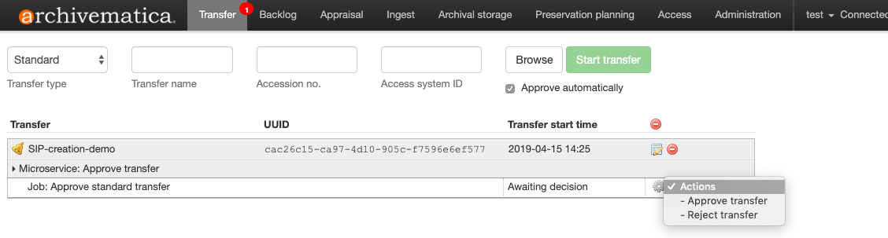
正規化マイクロサービスでは、選択した AIP 再インジェストの種類に応じてさまざまな選択を行います。
メタデータのみの再インジェスト
正規化を承認する 前 にメタデータを追加または更新して、メタデータがデータベースに確実に書き込まれるようにします。つまり、メタデータは、AIP METS ファイルに書き込まれます。メタデータを追加または更新するには、次の 2 つの方法があります：
Archivematica に直接メタデータを追加
SIP の名前と同じ行にある紙と鉛筆のアイコンをクリックすると、"メタデータの追加" ページが表示されます。
追加する権利関連のメタデータがある場合は、"権利" の下にある"追加" をクリックします。
追加する設定メタデータがある場合は、"メタデータ" の下にある"追加" をクリックします。
メタデータを入力します。
"インジェスト" （左上隅）をクリックすると、[インジェスト] タブに戻ります。
メタデータファイルの追加
SIPの名前と同じ行のメタデータレポートアイコンをクリックすると、"メタデータの追加"ページが表示されます。
"メタデータ" の下にある "メタデータファイルを追加" をクリックします
"ブラウズ"をクリックします
metadata.csvファイルを選択します。ファイル名は正確にmetadata.csvである必要があり、ファイルは メタデータのインポート で説明されている構造に従っている必要があることに注意してください。また、ファイルは、Archivematica に転送するオブジェクトをステージングするのと同じ転送元の場所にステージングする必要があります。
メタデータの追加が完了したら、"正規化しない" を選択します。
通常通りSIPの処理を続けます。
注釈
メタデータのみの再インジェストを行う場合、レビュー段階ではAIP内にオブジェクトはありません。Archivematicaは、保存時に既存のAIPのMETSファイルを置き換えます。
部分再インジェスト
必要であればメタデータを追加します。手順については、 メタデータのみの再インジェスト を参照してください
"アクセス用に正規化" を選択します。
通常通りSIPの処理を続けます。
フル再インジェスト
必要であればメタデータを追加します。手順については、 メタデータのみの再インジェスト を参照してください。
希望の正規化パスを選択します。
通常通りSIPの処理を続けます。
重要
すべての正規化オプションは、正規化されるすべてのSIPと同様に表示されますが、メタデータのみ、または部分的な再インジェストを実行する場合 のみ 、上記の正規化パスがサポートされます。
Tip
メタデータの追加や更新は、正規化の前でも後でも可能ですが、AIP METSが準備される前にメタデータがデータベースに書き込まれるようにするには、正規化の前にメタデータを追加するか、処理設定でメタデータのリマインダーをチェックなしに設定することをお勧めします。
Storage Service¶
ストレージサービスの [Packages] タブで、再インストールしたいAIPの横の [再インジェスト] をクリックします。
{kind=link}
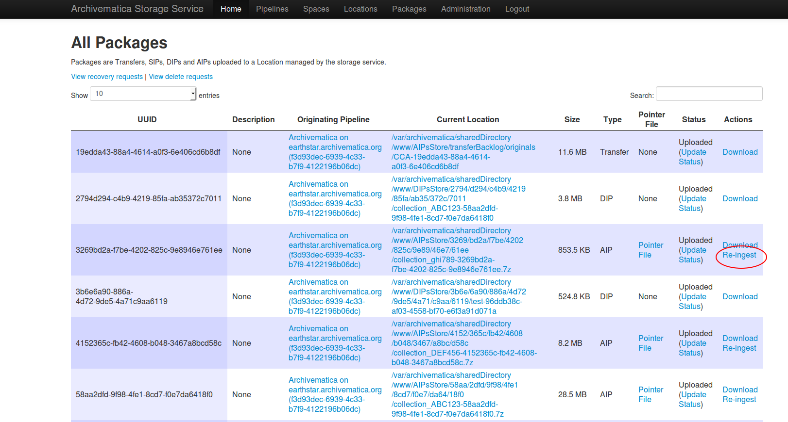
Storage Serviceは、パイプライン、再インジェストのタイプ（それぞれの詳細な説明は上記を参照）、完全再インジェストの場合は処理設定名を選択するよう求めます。
{kind=link}
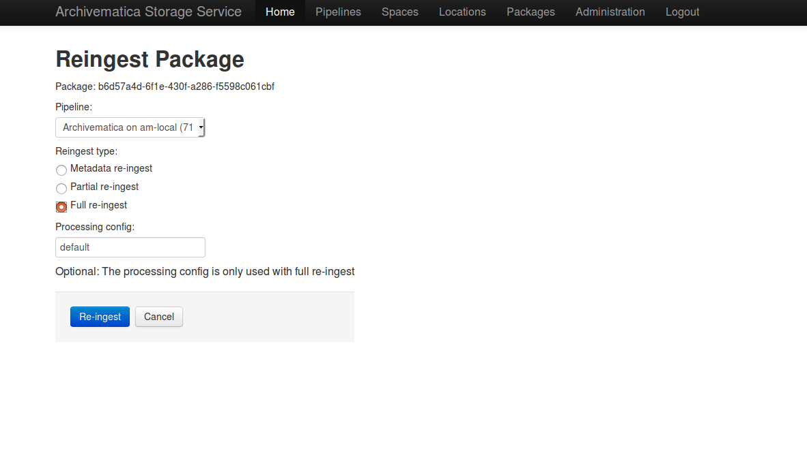
Storage Serviceは、AIPが再インジェストのためにパイプラインに送信されたことを確認します。パイプラインの[転送]または[インジェスト]タブに進み、上記のステップ3～6に従います。
API¶
文書は後ほど。
インジェストダッシュボードのクリーンアップ¶
[インジェスト] タブのダッシュボードは、時々クリーンアップする必要があります。SIPのリストが増えるにつれて、Archivematicaがこれらの情報を解析するのに時間がかかり、ブラウザのタイムアウト問題が発生する可能性があります。
注釈
これは、SIPまたは関連するエンティティを削除しません。単にダッシュボードからそれらを削除するだけです。
単一のインジェストを削除¶
削除するSIPがユーザー入力を必要としないことを確認します。ダッシュボードからSIPを削除する前に、すべてのユーザー入力を完了し、SIPを完了するか（つまり、AIP/DIPが作成され、保存/アップロードされる）、SIPを拒否する必要があります。
ダッシュボードからSIPを削除する準備ができたら、SIP名の右にあるメタデータ追加アイコンの隣にある赤い丸のアイコンをクリックします。
ダッシュボードからSIPを削除するには、［確認］ボタンをクリックします。
完了したインジェストをすべて削除¶
削除したいSIPが完了していることを確認します（例：AIP/DIPが作成され、保存/アップロードされる）。この機能は完了したSIPに対してのみ機能します。拒否されたSIPは1つずつ削除する必要があることに注意してください。
完了したSIPをすべて削除する準備ができたら、SIPリストのテーブルヘッダーにある赤丸のアイコンをクリックします。
[確認］ボタンをクリックして、完了したすべてのSIPをダッシュボードから削除します。